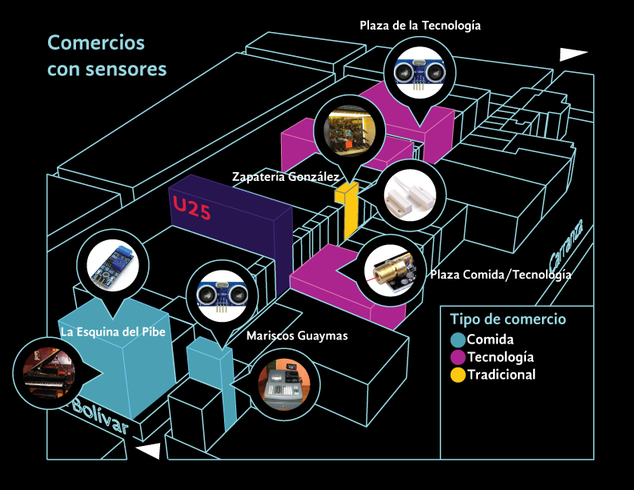
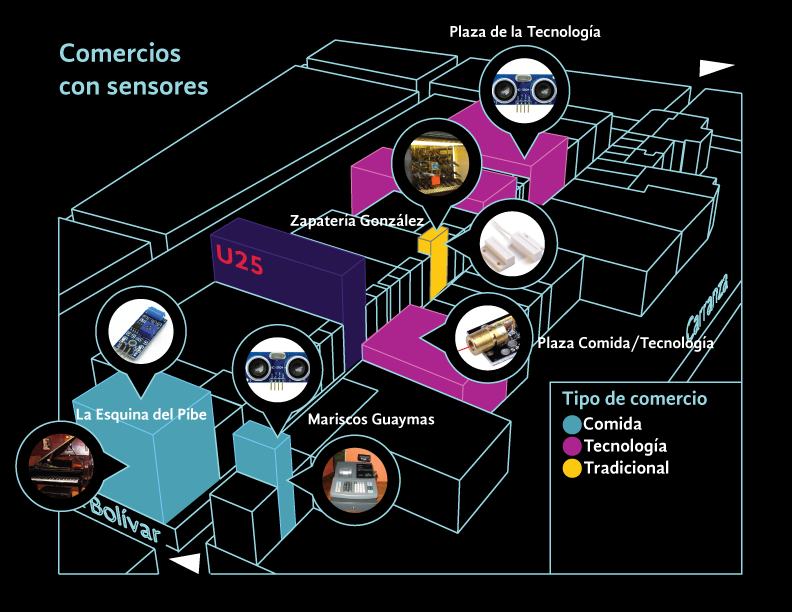

Uruguay 25: Tecnología, apropiación y memoria
2019
Categorías: IoT, Instalación Interactiva
Sitio web: www.uruguay25.mx
GitHub: https://github.com/psotresc/Uruguay25-Interactivo2
Es un proyecto participativo que buscó generar apropiación simbólica por parte de los comerciantes y transeúntes con el edificio ubicado en el número 25 de de la calle de República de Uruguay para su próxima apertura como Centro Cultural, a través de una instalación interactiva generada en conjunto con locatarios, con el fin de que el público al interactuar con la instalación le dé visibilidad al edificio y a los locales. El proyecto fue realizado en colaboración con Carlos Guerrero Millán, Cristina Rivas Herrera como parte de la investigación terminal de la Maestría en Diseño, Información y Comunicación de la Universidad Autónoma Metropolitana de la Unidad Cuajimalpa. Abarcó una investigación teórico-conceptual, la creación de una metodología interdisciplinaria y el desarrollo de un prototipo de alta fidelidad, el cual se presentó al público el 31 de agosto de 2019 y el 6 de septiembre.
Lenguajes de Programación
Python
C#
Javascript
PHP
C++
Software
Arduino
TD
Unity 3D
After Effects
illustrator
Photoshop
Para adecuarse a la vocación comercial de la calle y como parte de la investigación se decidió el utilizar un escaparate que mostrara tres interactivos de acuerdo con los distintos momentos u horarios de República de Uruguay y hace referencia también al pasado, presente y futuro del edificio y de la calle.
El primer interactivo se presentó de las 9 a las 13 horas y tuvo como tema principal los recuerdos y relatos acerca del edificio y de la calle y que la gente pudiera descubrirlos a través de la instalación. Para ello se decidió captar la silueta de las personas para que con ella pudieran revelar secretos del pasado del edificio, con el fin de que las personas se refelejaran en el edificio. Para ello se utilizó un Kinect V2, para recuperar la imagen de profundidad y mezclarla con las imágenes recopiladas.

El segundo interactivo, se exhibió entre las 13 y las 17 horas, y reflejó las dinámicas comerciales y de entretenimiento que hacen distinta a la cuadra con relación a otras. La innovación, los sabores y la tradición se dan cita en el juego “De compras en Uruguay” , este es un juego que reacciona a las dinámicas de la calle y para ello en colaboración con los locatarios se colocaron diversos sensores en sus locales, los cuales representaran las dinámicas de sus negocios y de la calle, dichos sensores enviaban señales que se convertían en íconos dentro del juego y que el jugador tenía que recolectar para ganar puntos y poder ganar recompensas en los locales. Se trabajó con un total de 4 negocios usando fotoresistencias, sensores de presencia, sensores de vibración, botones y sensores magnéticos reed conectados a módulos Node MCU que enviaban las señales WIFI

Finalmente, el tercer interactivo que se presentó de las 17 a las 21 horas buscó mostrar el futuro y las posibilidades del próximo Centro Cultural y le permitía al público dibujar lo que le gustaría ver en ese edificio a través del movimiento de su cuerpo y así detonar la apropiación del espacio. Para ello podía realizar la intervención digital de fotografías del edificio, para el interactivo se realizó un levantamiento de imágenes 360 grados del edificio las cuales podía el usuario explorar a través del uso de botones y seleccionar un espacio para intervenir a través del movimiento de su cuerpo, para ello se utilizó el Kinect V2 para realizar el tracking de la muñeca derecha y usarla para dibujar.

El proyecto general Uruguay 25 Arte, Ciencias , Humanidades y Ciudadanía, se encuentra en fase de desarrollo y planeación a cargo de la Coordinación General de Difusión de la UAM. El proyecto de investigación de los alumnos de MADIC en el edificio se realizó con el apoyo de la Dirección Académica y Cultural de esta Coordinación.
Más información en el sitio web:
http://uruguay25.mx
 
